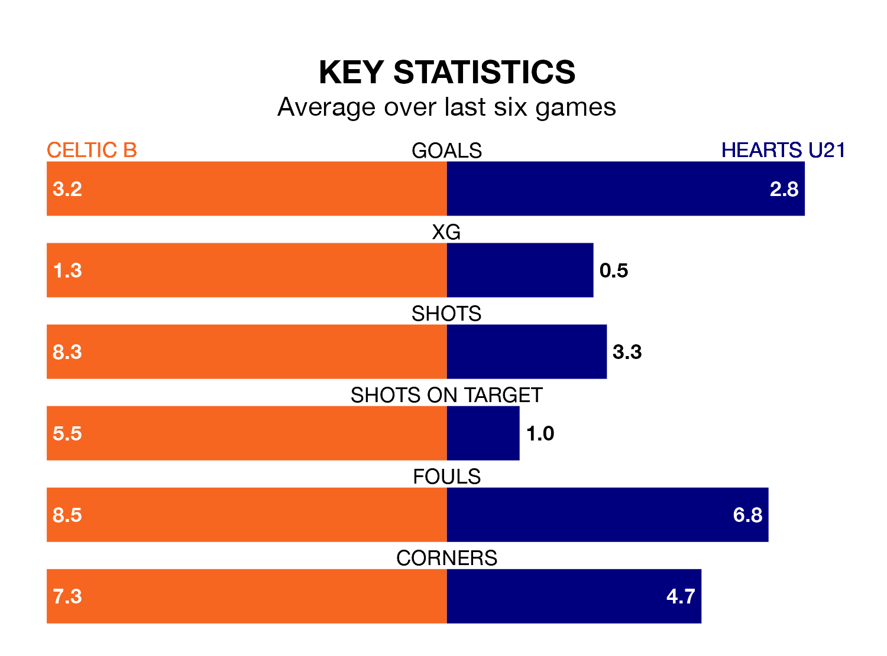

Friday's late match between Celtic B and Hearts U21 promises to be one for the neutrals, as two of the Lowland Football League's most free-scoring sides go head-to-head.
Ahead of the game at the Excelsior Stadium, Celtic B and Hearts sit third and second in the goal-scoring charts, with 78 and 91 goals respectively.
another, another, another, another, another, another, another, another, another, another, another, another, another, another and another lead the way for the home side, having bagged zero goals each in their 32 games to date.
And another, another, another, another, another, another, another, another, another, another, another, another, another, another, another and another have been the main men in the opponents' penalty box for Hearts U21, with zero goals each.
Celtic B are in good form in the Lowland Football League, with four wins and a draw from their last six games.
With six wins and no losses over that period, Hearts U21's form is better – they have taken 18 points from 18, compared to the hosts' 13.
Hearts are second in the table after 33 games, of which they have won 21 and drawn six, earning 69 points.
Celtic B are four places behind the away team in sixth, with 17 wins and five draws putting them on 56 points.
In the last three years, Celtic B and Hearts U21 have played each other on three occasions. They won one each, and they drew once.
Their last meeting was on October 20, when Hearts U21 won 2-1 at home.
Celtic B's last match was on Saturday, a 6-4 loss against East Stirlingshire.
Hearts U21 beat Bo'ness United 4-2 last time out, on April 12.
Updated: 15:40 (UTC), 18/04/24